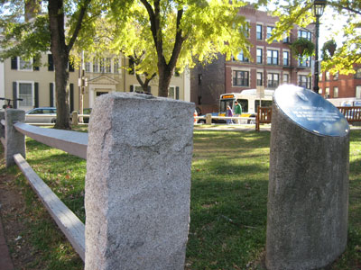
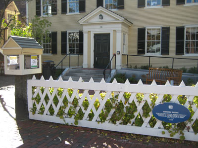

24
Photos are taken of historic locations, in order, from Central Sq to Harvard Sq. Cambridge Historical Commission’s Blue Oval Historic Markers are just out of view. Index number into text description, skipping title. Order by date (or earliest date for date ranges) to get EARTHENWARE.
N from UNION, 1851 - 1922 R from RINDGE, 1889 E from HOUSEKEEPING, 1836 - 1923 T from TAVERN, 1737 - 1837 A from AMERICAN, 1714 - 1779 E from MARKETPLACE, 1635 R from BRATTLE, 1727 H from HOME, 1808 W from EDWIN, 1883 A from ARCHITECT, 1886 E from TOWERING, 1942
E 1635 A 1714 R 1727 T 1737 H 1808 E 1836 N 1851 W 1883 A 1886 R 1889 E 1942
86
N from UNION
24
R from RINDGE

44
E from HOUSEKEEPING

16
T from TAVERN

12
A from AMERICAN
14
E from MARKETPLACE

19
R from BRATTLE


1
H from HOME

77
W from EDWIN


21
A from ARCHITECT

15
E from TOWERING